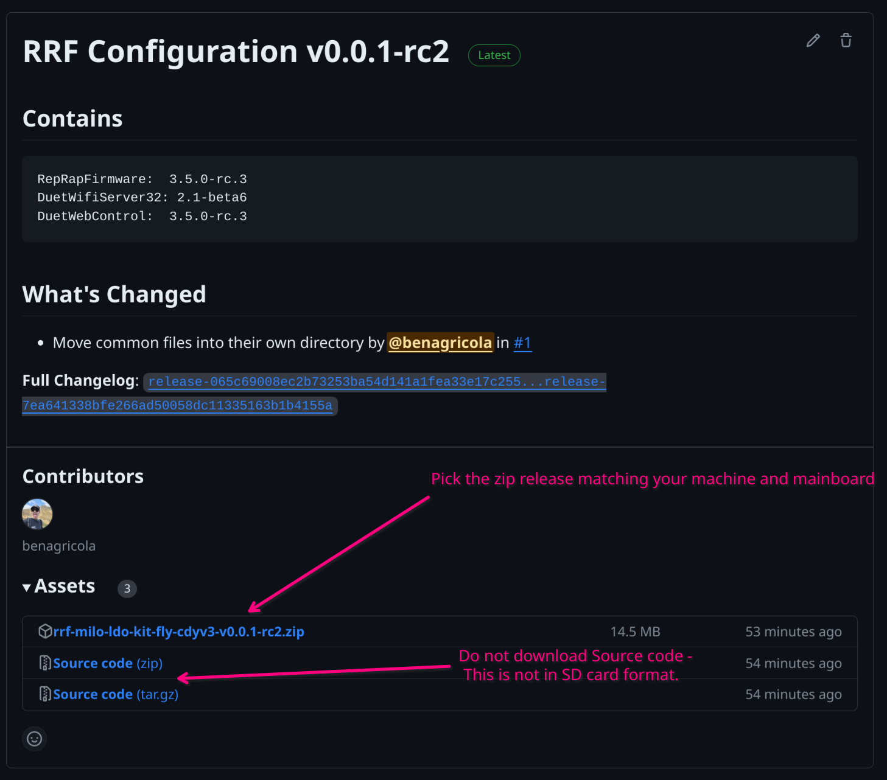
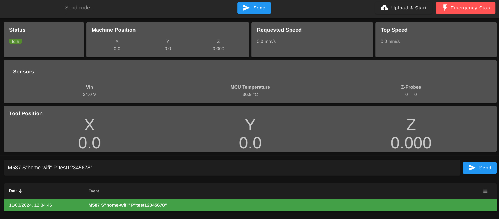

Install RRF
Sit Back... and Relax!
For those of you who are less software-inclined, don't panic! We've done most of the work for you.
RRF requires you to populate an SD card with a specific file structure and files to go with it. To To make this easier for you, we have built RRF configuration releases for common hardware specifications that include mainboard and WiFi card firmware, as well as a known good configuration for your machine. If you don't wish to install the pre-made firmware and would rather create your own from scratch, then please follow this tutorial.
Public Beta
The RRF configurations for the reference design and LDO kit are released as a public beta. As outlined in the repository, we take no responsibility or liability for any loss or damage caused to you or others from the use of this software, which is provided as-is.
That said, this software has been used internally and tested by a small group of external users and has proven to be, in our testing at least, reliable and properly configured.
Prepare your SD Card
You will need a freshly formatted SD card with a capacity of up to 32GB.
If the card capacity is 4GB or lower, use the FAT16 format - If the capacity is more than 4GB (up to 32GB) then you will have to use the FAT32 format.
The SD card should also be class 4 or higher.
Download a Configuration Release
First, you'll need to download a zip release for the hardware configuration of your choice from the RRF-Configs repository. These releases bundle the latest version of RepRapFirmware for your mainboard, the latest WiFi firmware, a known-good configuration, and (optionally) MillenniumOS.
MillenniumOS is an "operations system" for RRF that includes a Fusion 360 post-processor and custom g-code dialect to enable easy work-piece probing, tool changes, toolsetting, and other quality-of-life / safety features. If you are new to machining, starting with MillenniumOS should help you focus on creating your tool paths and making your first cuts, without focusing too much on the intricacies of edge finding, tool offset calculations, and other things.
The release zip files are named based on the machine hardware specification the configuration was designed for, so if you have a kit with a particular mainboard, click to download the zip file which is named based on the kit manufacturer and mainboard you have.
If you have a kit that does not conform to any known specification, please open an issue.
The releases with mos in the zip file name contain the latest compatible release of MillenniumOS.

Extract Configuration Release
Once you have the RRF configuration release downloaded, you need to extract it to the root of your formatted SD card.
Make sure the tool you use to extract the files does not create a subdirectory based on the name of the Zip file. The layout of your SD card should look like the following image:

Board specific setup
Some boards require jumpers to be set to allow mainboard or WiFi updates to be applied. You should check if this applies to you by reading your mainboard documentation.
For example - if you are using the Mellow FLY CDYv3, then you need to add 2 jumpers as shown below to enable on-board WiFi updates.

Initial Setup
At this point, eject the SD card from your computer and insert it into your mainboard.
Power your board either via USB or via PSU and wait. The board will install a new version of RRF, automatically update the WiFi module, and then start a WiFi Access Point called Milo. The password for this is millenniummachines.
Please be patient
Installing RRF, updating the WiFi module, and starting a WiFi AP can take some time. After powering the board on for the first time with the SD card installed, you should leave the board for 5-10 minutes to work. If the Milo access point appears then this is a safe indication that the initial update and configuration process is complete, and you are ready to use the machine.
If the WiFi AP does not appear after 10 minutes, take the SD card back out of the board, plug it back into your computer, and check if the firmware.bin file in the root of the SD card has been renamed to FLY.CUR. If it has not, then the board was not updated properly. Please use our discord or other channels for support.
Accessing Duet Web Control
Once the Milo WiFi Access Point is visible, you can connect to it with the following details:
SSID: Milo
Password: millenniummachines
Once connected, open a browser and go to http://192.168.40.1 - note this is http and not https.
Warning
Some browsers may force you to connect to https:// by default - you may need to specify the full URL, http://192.168.40.1 to override this behaviour.
Once connected to Duet Web Control, you should see a screen similar to this. This is the interface you will use to control your new CNC Mill!

Configure your WiFi network
If you want to connect your Milo to an existing WiFi network rather than using the inbuilt Access Point, you can use the Web Interface to change the machine configuration.
The first step is to tell RRF about your wireless network. Click on the "Console" tab on the left-hand side and type the following into the Send code... box, then press ENTER:
M587 S"your WiFi SSID" P"your WiFi password"
You should see a green highlighted line indicating that the command was successful:

You must now instruct RRF to connect as a WiFi client rather than starting its own Access Point.
We package a network.g.example file which configures RRF as a WiFi client and can be used to set any user-specific settings that should not be overwritten when updating. The file needs to be renamed to network.g for it to load.
To rename it, browse to the "Files -> System" tab, right-click on network.g.example, then click "Rename", and enter network.g:

You may need to configure additional network-specific settings in this file, but this is outside the scope of this guide - please refer to the Duet3D Gcode Documentation for this - specifically codes M553, M554 and M586.
After editing the file to your liking, you can restart the mainboard. Once restarted, it should attempt to connect to your WiFi network.
You may have to use your router interface to identify the address that the Milo has been given on your network if this was not configured statically - this is outside of the scope of this guide.
You can also connect to the mainboard over USB using Putty or another terminal emulator depending on your operating system - watching the output of the terminal when the machine connects to the WiFi network will show the IP address that has been assigned.
Warning
When you are prompted by DWC to Install the updates, you should click Yes - but be aware, this will involve flashing your WiFi module twice - once when you click Yes, and once when the board reboots after it is updated. This is unfortunate, but necessary, because we need the flash-on-reboot to enable hands-free configuration when extracting the Zip file to a fresh SD card and inserting it into an unconfigured board.
You can now also configure optional accessories like a touch probe.
For the touchprobe you can modify and then rename the existing touchprobe.g.example file.
You will need to set which pin you connected your probe to.
For example if you connected your probe to the Y-MAX connector, your touch probe configuration should look like this:
M558 K0 P5 C"!ystopmax" H2 A10 S0.01 T1200 F300:50
(The "!" before ystopmax innverts the pin to trigger when the circuit is closed rather than a normally closed sensor.)
At this point, the basic firmware setup is complete and all that remains are some firmware checks which will be covered later in the manual.
Warning
We only provide bundled firmware configurations for specific machine setups. If your machine is self-built, you can modify one of these configurations to match your mainboard, wiring, and other unique machine features. Alternatively, you can use the TeamGloomy Configurator - but remember that the configurator produces 3D printer configurations, so it will need modifying to suit the particular features of your Milo.
It is now safe to perform the physical installation of your board into your mainboard mount.